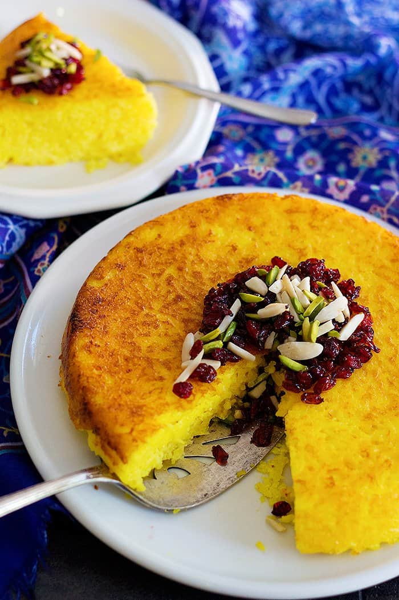

Tahchin

Description
Persian Savory Saffron Cake - Tahchin is a very delicious traditional Persian rice dish full of saffron and other great flavors. Usually served with chicken, this tahchin recipe is surprisingly easy to make!
If you're familiar with Persian recipes, you know that rice is a key element of this beautiful cuisine. From classic Persian rice and tahdig to sabzi polo (herb rice) and tomato rice, this humble grain is cooked in different ways that result in different flavors. Today, I'm showing you one of my favorite rice recipes called tahchin, aka Persian savory saffron rice cake.
Ingredients
- Long Grain Rice
- Yogurt
- Eggs
- Saffron
- Vegetable Oil
Steps
Par Cook the Rice
- Rinse rice a few times and set it aside. Bring a pot of water to boil and add the rice. Boil for about 5 to 7 minutes until it's half-cooked, meaning the grains are soft on the outside and still hard on the inside. Drain and set the rice aside.
Make the Egg and Saffron Mixture
- In a large bowl, mix eggs, yogurt, vegetable oil and saffron until combined. Add the par cooked rice and stir until the mixture covers all grains.
Bake in the Oven
- Preheat the oven to 350°F and coat a 13x9 baking dish or two 8 inch baking dishes with non stick cooking spray. Transfer the rice and yogurt mixture to the baking dish and bake in the oven for almost an hour until it's set and golden.
To Serve:
- I love serving tahchin with chicken cooked in a delicious thick tomato sauce. A couple of side dishes such as salad shirazi and mast o khiar will turn this into the ultimate Persian feast!